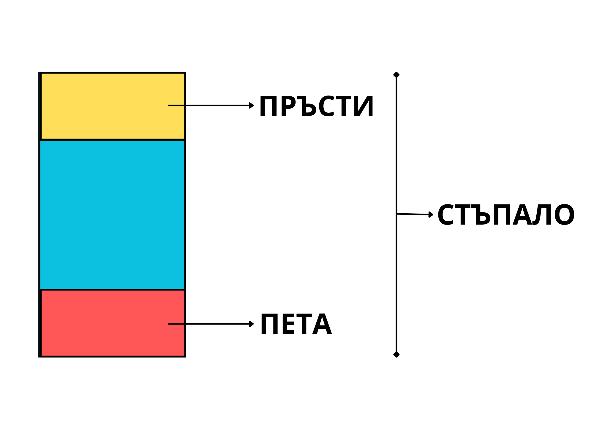

Класическият балет е сценично изкуство, което се основава на
формализирани движения и позиции. Основата на цялата балетна техника
стъпва върху пет основни позиции на
краката (по-късно Сергей Лифар добавя и шеста).
Всички движения започват и завършват в една от тези позиции. Най-важната
характеристика е "извъртането" (turnout) – способността
на танцьора да завърти краката си навън от тазобедрените стави.
II. История
Възникването на балета като музикално-сценично изкуство е резултат от
дълбоки обществени и културни промени в Западна Европа. Това е период, в
който се изграждат нови империи, стремящи се към разширяване на своето
влияние чрез завладяване на далечни територии. Пренареждането на
политическите сили води до чести войни и вътрешни конфликти, които
неминуемо се отразяват върху духовния живот на хората. Постепенно се
разклаща представата за хармоничен и устойчив свят. В същото време
епохата на Възраждането бележи изключителен подем на изобразителните
изкуства, а именно в тази богата културна среда се заражда и балетът
като нова форма на художествено изразяване.
Илюстрация: атмосфера от епохата, в която се оформя
балетът като сценично изкуство
III. Интерактивен модел
Упътване: Използвайте бутоните под сцената, за да
видите как балерината заема различните позиции. Обърнете внимание на
разположението на стъпалата и колената. Можете да въртите камерата с
мишката.
IV. Анализ на позициите
Всяка позиция има своите особености, които видяхте в симулацията.
Позиция
Особености
I (Първа)
Петите са събрани, пръстите са завъртени навън (turnout). Това е
„изходната“ позиция за много движения и помага за правилна стойка.
II (Втора)
Стъпалата са раздалечени настрани, като turnout се запазва. Дава
стабилна опора и се използва често при подскоци и баланси.
III (Трета)
Едното стъпало е пред другото, като петата на предния крак е близо
до свода/средата на задния. Подготвя за по-сложни кръстосани
позиции.
IV (Четвърта)
Краката са кръстосани, но с разстояние отпред–назад. Позволява
по-голям контрол и се среща често при пируети и „плие“ в движение.
V (Пета)
Най-класическата позиция: краката са максимално кръстосани, петата
на единия е до пръстите на другия. Изисква добър turnout и баланс.
VI (Шеста)
Стъпалата са паралелни и почти събрани (без turnout). По-късно
добавена, използва се в модерни интерпретации и като подготвителна
стойка.
Забележка: При всички позиции ключови са стабилният корпус, равномерното
разпределение на тежестта и безопасният turnout (от тазобедрените стави).
V. Практически задачи
Задача 1: Опитайте се самостоятелно чрез влачене и
нагласяне на ъглите на наклон на правоъгълниците, изобразяващи двата
крака на балерина, да тествате дали сте запомнили разположението на
краката на балерината при отделните позиции.
Задача 2: Чрез бутон Random можете да
настройвате случайна позиция. Опитайте се да познаете коя е тя, след
което проверете дали предположението Ви е вярно, като използвате
бутоните, настройващи „стъпалата“ в точно определена позиция.
Как работи графичното поле

Интерактивно графично поле за подреждане на стъпалата в балетните
позиции
В графичното поле са представени две стъпала, изградени от цветни
правоъгълници. Чрез тях ученикът може визуално и практически да
упражнява разположението на краката в основните балетни позиции.
Ляв бутон на мишката: влачене и преместване на
стъпалото
Десен бутон + влачене: завъртане на стъпалото
Shift при въртене: фиксиране на ъгъла през 15°
Бутони I–VI: проверка дали подредбата съответства на
конкретна балетна позиция
Random: генериране на случайна позиция за
разпознаване
Целта на упражнението е учениците самостоятелно да приложат знанията си,
като съчетаят наблюдение, пространствено мислене и интерактивно
действие.